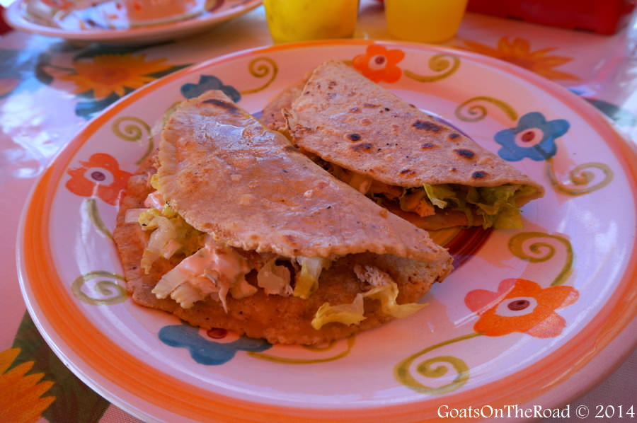
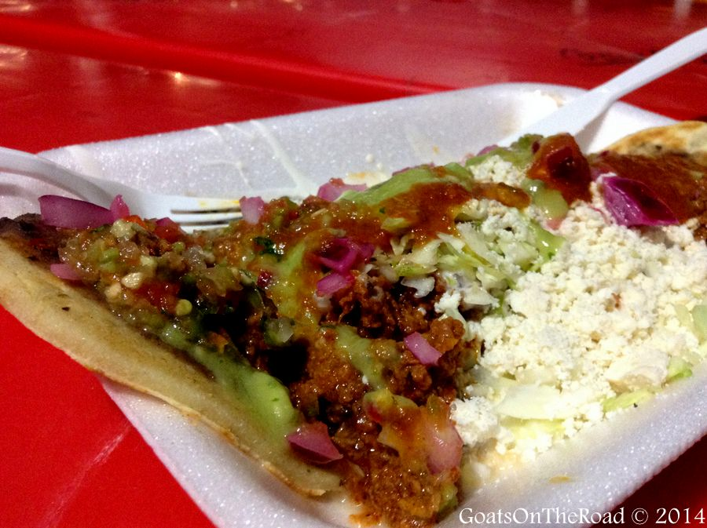

Food for Any Meal
Wander down any road in Mexico and the exquisite aromas will draw you to one of the many restaurants or street stalls. The tantalizing smell of spices and herbs being cooked is palpable. The mouth-watering ingredients used in Mexico are some of the best we’ve come across in all of our travels!
We’ve been eating our way through the Yucatan Peninsula and haven’t found a dish that we don’t like. There are endless things to do in Mexico, with eating being a huge highlight. Here’s a preview of some of the many scrumptious foods you can find on offer in this spicy region.
Breakfast
Chilaquiles
This isn’t exactly a wholesome, healthy breakfast like we’re used to in North America! Tortilla chips are smothered in green or red salsa and topped with pulled chicken pieces or eggs, some onions, cream and sometimes cheese. Typically beans are served on the side.
Molletes
If you thought the chilaquiles were a bit heavy for a breakfast food, you definitely wouldn’t be able to handle molletes! These are delicious. Bolillos (Mexican styled baguette) are cut in half and smothered with refried black beans and a white cheese called chihuahua, which is similar to a Monterey Jack or White Cheddar. The final step is to grill face up in the oven until the cheese is perfectly melted. Needless to say, these are one of our favourite Mexican breakfasts and eating these was one of our favourite things to do in Playa del Carmen.
Huevo Rancheros
If you thought the chilaquiles were a bit heavy for a breakfast food, you definitely wouldn’t be able to handle molletes! These are delicious. Bolillos (Mexican styled baguette) are cut in half and smothered with refried black beans and a white cheese called chihuahua, which is similar to a Monterey Jack or White Cheddar. The final step is to grill face up in the oven until the cheese is perfectly melted. Needless to say, these are one of our favourite Mexican breakfasts and eating these was one of our favourite things to do in Playa del Carmen.
Lunch
Tacos
Here in Mexico, tacos are small, soft, corn tortilla shells that are laid flat and topped with meats of your choice. Popular options include fish, chorizo, beef, chicken and vegetarian. Usually some lettuce, avocado, onion and wedges of lime will come with the tacos as well. Fish tacos are so light, refreshing and fabulous. They’re definitely our favourites.
Sopa de Lima
It’s a healthy, flavourful soup found in the Yucatán State. Made with shredded turkey or chicken, tomatoes, onion, crushed up tortilla chips and the perfect balance of lime and spice.
Huaraches
These oblong shaped snacks originated in Mexico City in the 1930’s and have been popular ever since. The dough is thicker than tacos or quesedillas and is topped with meat, red or green salsa, onions, cilantro and cheese on top.
Dinner
Queso Relleno
Queso Relleno is complex and full of rich flavours. It’s a dish consisting of a hollowed out ball of Dutch Edam cheese, stuffed with ground pork and seasonings, which is baked until the cheese is soft. The sauce includes raisins, chickpeas, onions, tomatoes, olives, capers and peppers. Quite the mix of flavours.
Pollo Pibil
Another healthy option for a meal here in Mexico! This is a Yucatán-styled chicken, which is marinated in citrus juices and achiote paste, roasted and topped with grilled onions. The flavours are bright, light and absolutely scrumptious.
Tamales
Made with a starchy, thick, corn-based dough, these pockets of deliciousness can be stuffed with anything from meat to cheese, to fruits and vegetables. Once filled, they’re wrapped in a banana leaf and cooked in the pib, or steamed in a pot. Once unwrapped from the banana leaf, they’re typically topped with a salsa and enjoyed piping hot.

A Word of Caution
Tap water is not generally advised for drinking in Mexico, particularly for visitors. In many places (particularly backpacker-friendly resorts) water containers can be filled with drinking water for a few pesos - so a reusable container is both an environmentally and financially better option.
The water system in Mérida is unusually good for Mexico; for some visitors it is the only Mexican city where they will drink the tap water. Outside of this city the situation is different. In small towns the local water can be very bad, and bottled water is recommended.
It would be difficult for anyone visiting this area not to sample the Tequila, which should be used in moderation. For those more adventurous souls, Absinthe is legal in Mexico and also, moderation is suggested. Fresh fruit juice (called jugo or agua when juice is mixed with water) is very popular in the Yucatán. Freshly squeezed OJ can be found in most markets. Other fresh juices can include limón or lima (lemonade or limeade), naranjada (orange juice with water), mango, piña (pineapple), melón (canteloupe), sandía (watermelon) and more.